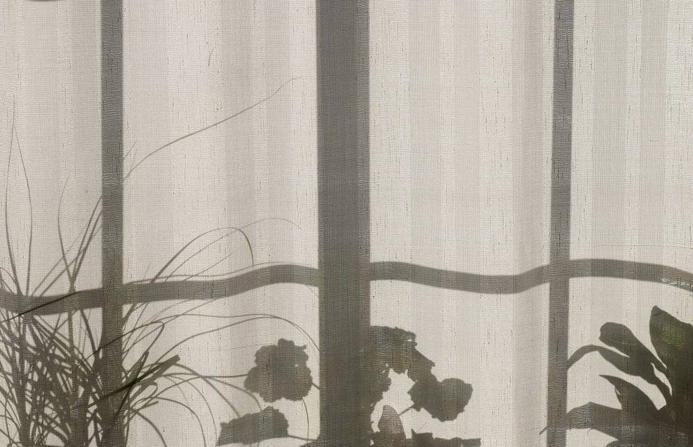
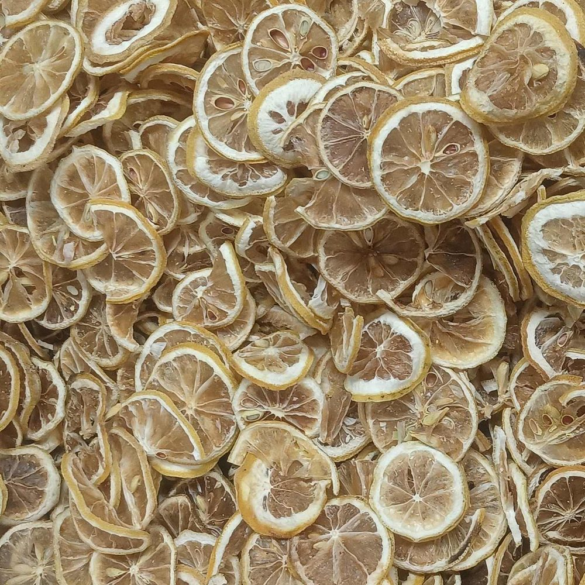
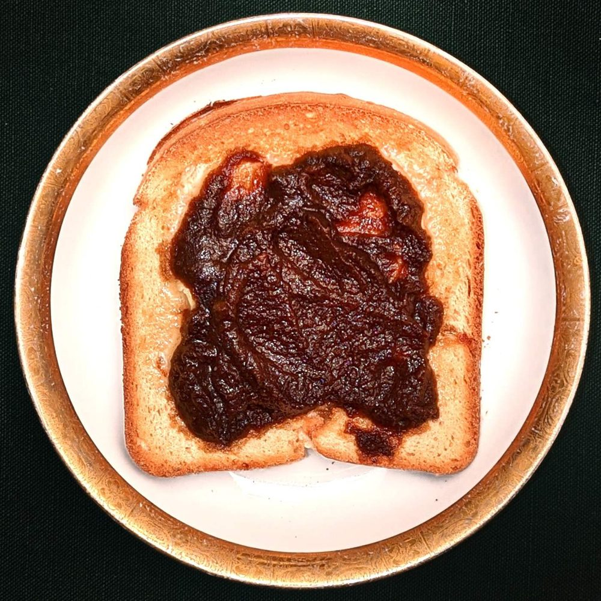
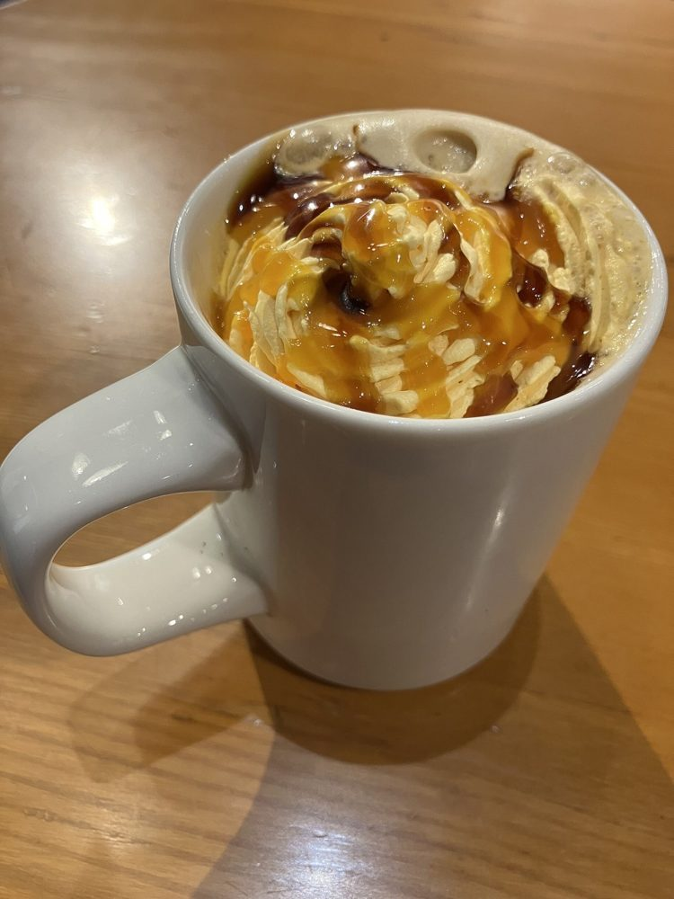
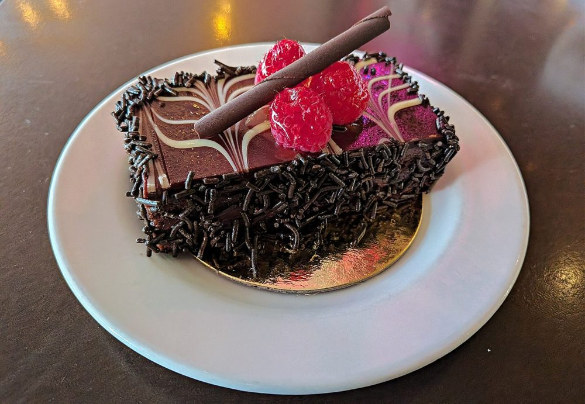
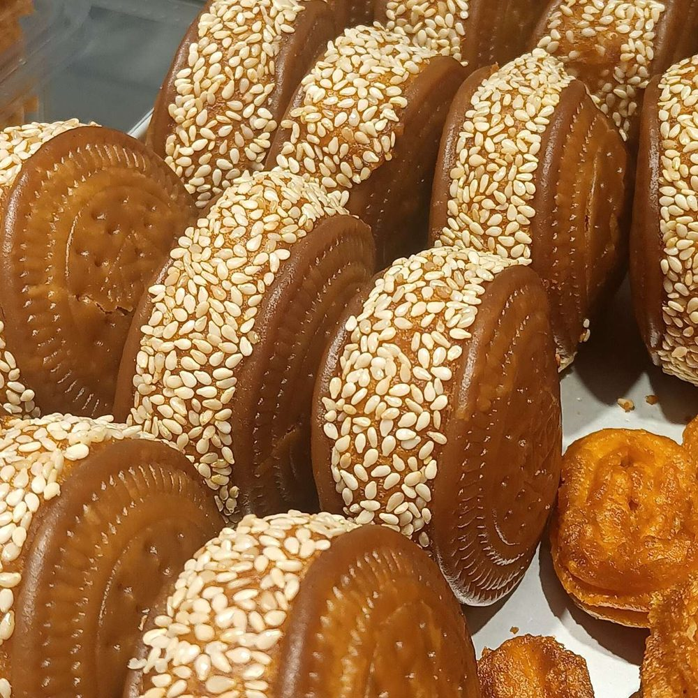
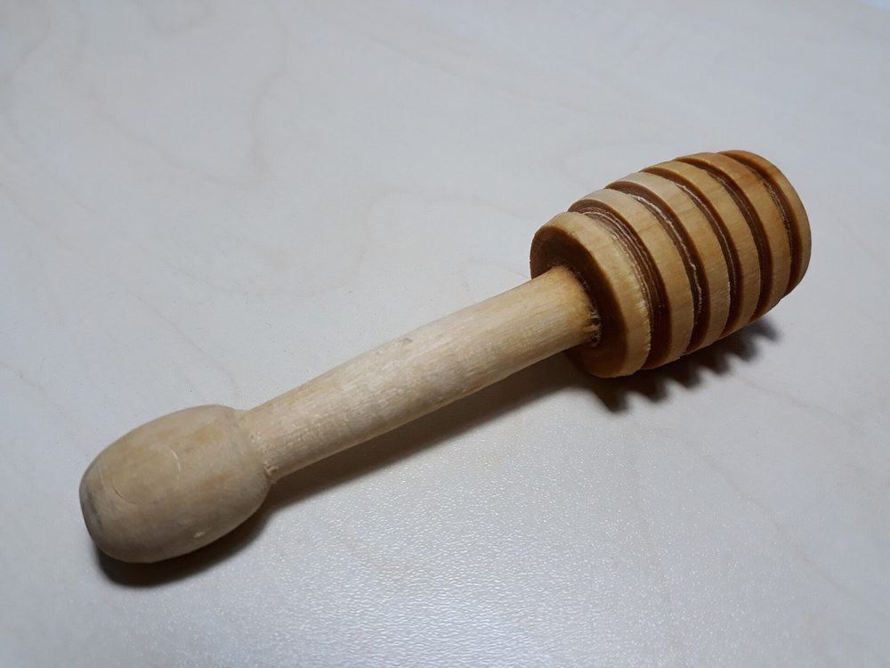
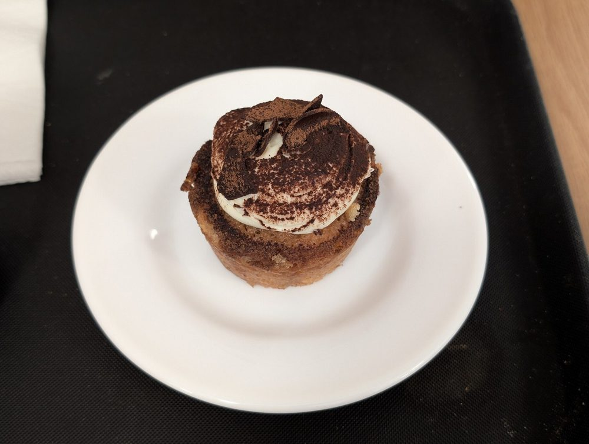

写真クレジット: Wood Texture Background / Bango Textures / CC0 1.0
お店のこと
横手の古民家から、秋田とつながる。
Cafeteria ヒラジョーは、横手駅から徒歩5分ほどの平城町にあるカフェです。2024年4月、古民家を改修して、1階のカフェと2階のゲストハウスが誕生しました。
運営は株式会社ワンダーマート。秋田と人をつなぐ「総合的な場づくり」を掲げ、カフェは地域の人にも旅人にも「心の帰る場所」であることを目指していると紹介されています。
- 1階: Cafeteria ヒラジョー(飲食)
- 2階: ゲストハウス「Stay&Work HIRAJO」
- 地元の食材にこだわったメニュー
※上記は報道・紹介記事で確認できた内容です。店名の意味は確認できていないため、ここでは触れません。

古民家の空間
木のぬくもりが感じられる、落ち着いた店内と紹介されています。
地元の食
地元・横手の食材を使った料理を中心に楽しめるお店です。
人がめぐる場所
地元の人と、県外から訪れた旅人が行き交う拠点を目指しています。
メニュー
紹介されている、おなじみの味。
報道・紹介記事で取り上げられた品の一例です。写真はイメージで、実際の品とは異なります。営業時間・価格などは準備中です。

ヒラジョーナポリタン
自家製ソースのナポリタン。懐かしい味わいの一皿として紹介されています。
価格・詳細は準備中

カフェリモーネ
レモネードとエスプレッソを合わせたドリンクとして紹介されています。
価格・詳細は準備中

マフィン・焼き菓子
いぶりがっこや味噌漬けを使ったマフィンが紹介されたことがあります。
価格・詳細は準備中
ひとやすみのイメージ
あたたかい一杯と、甘いもの。








口コミ
こんな声が届きそう(イメージ例)
以下は制作側が創作したイメージ例で、実在のお客様の声ではありません。
古い家の落ち着く空気の中で、ゆっくり一息つけました。また寄りたいです。
地元のものを使った一皿が、素朴なのにちゃんとおいしい。旅の途中の休憩にぴったり。
スタッフさんとの何気ない会話が心地よく、帰り道が少しあたたかくなりました。